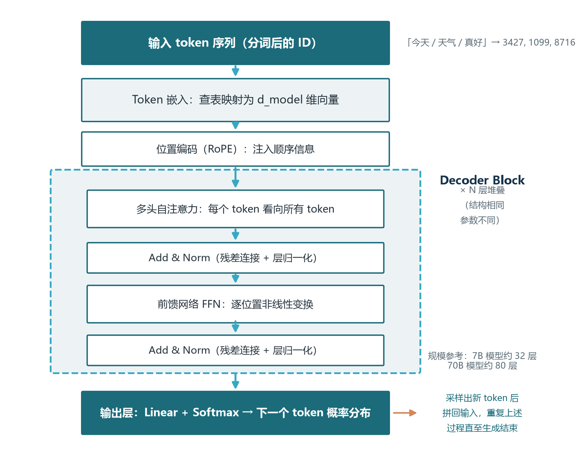
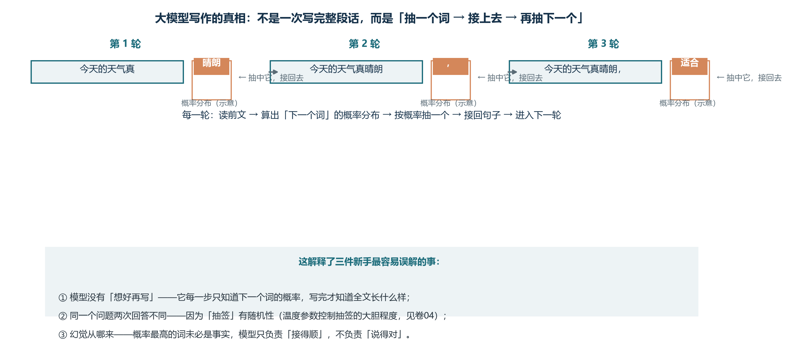
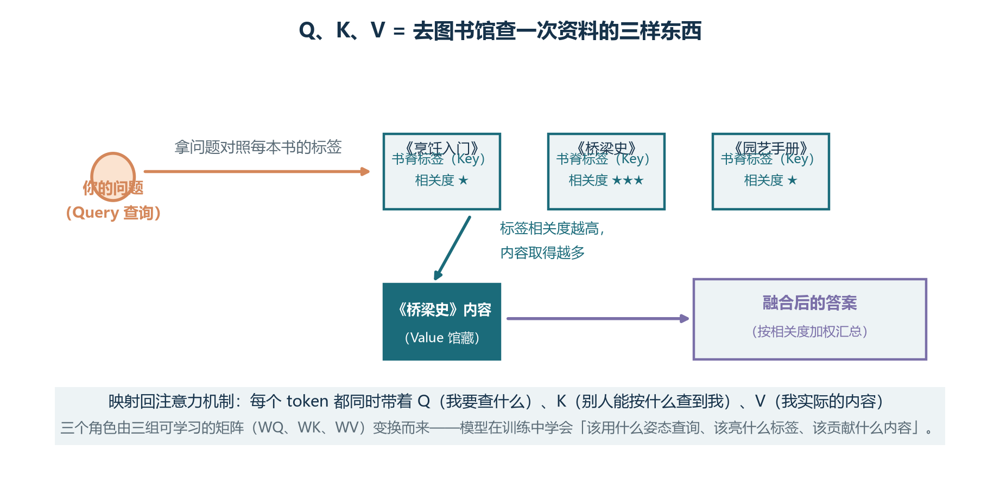
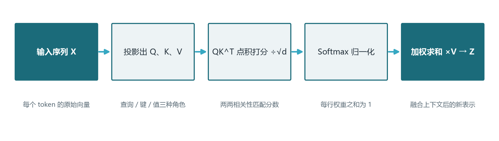
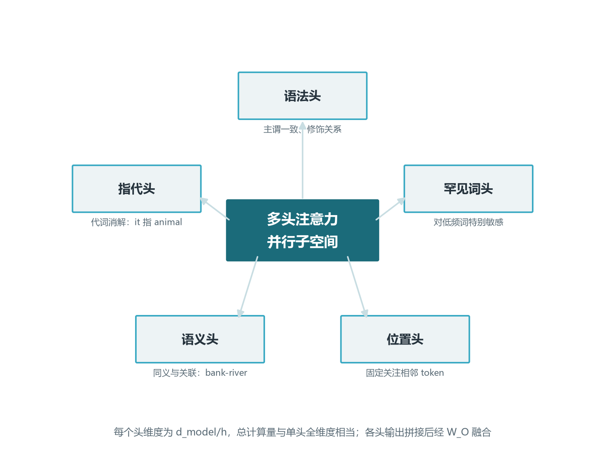
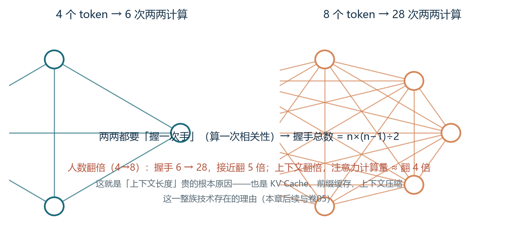
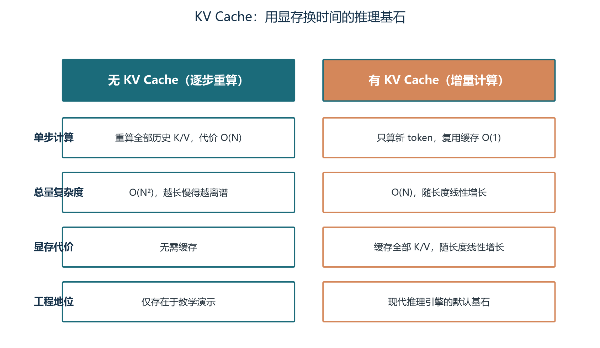
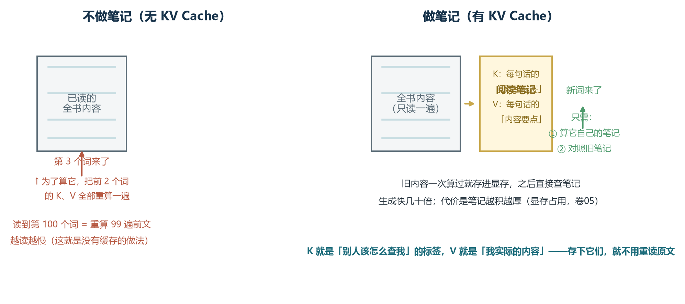
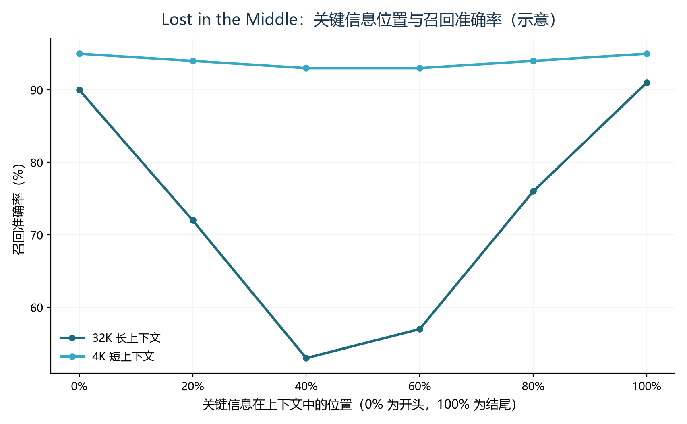

前言：钻进 Agent 的大脑
上一卷我们建立了 Agent 的全景地图：Agent 等于大模型加上规划、记忆、工具与循环，其中大模型是唯一“知道自己要干什么”的大脑。从本卷开始，我们进入“打地基”阶段，连续三卷解剖这个大脑——本卷讲它的思考方式（Transformer 与注意力机制），卷03 讲它的识字方法（分词、嵌入与向量表示），卷04 讲如何据此挑选合适的大脑（架构演进与选型决策）。地基打得牢不牢，直接决定后面十二卷的“器官”与“系统”建得多高。
为什么 Agent 工程师必须钻到模型这一层？因为在真实项目里，绝大多数让开发者彻夜难眠的问题，根因都不在框架层，而在模型层。长对话跑着跑着就“失忆”，第 5 轮用户说过的预算约束到第 30 轮被完全抛在脑后，这是长上下文中段遗忘在作祟；上下文越堆越长，费用和延迟双双失控，这是注意力平方复杂度与 KV Cache 显存增长在埋单；明明把关键资料塞进了提示词，模型却像没看见一样答非所问，这是注意力被无关信息稀释的结果。如果你不懂得这些机制，就会把它们误诊为“记忆模块没写好”“提示词不够强”，然后在错误的层面打补丁，治标不治本。
有一个类比贯穿本卷：会开车不需要会造发动机，但一名赛车手必须理解油门、转速与抓地力之间的关系，才能在极限工况下做出正确操作。Agent 工程师就是驾驶模型的人，而且几乎总在“极限工况”下工作——超长上下文、高频多轮调用、严苛的成本约束。本卷的目标不是把你培养成算法研究员，而是帮你建立一套准确的“模型直觉”：看到某个工程现象，能立刻联想到背后的机制，并做出有依据的架构决策。
学完本卷，你将能够：
- 用“图书馆找书”的类比向同事讲清 Q、K、V 三个角色与自注意力的四步计算，解释模型如何决定“看哪里”；
- 说清上下文窗口为什么有限、上下文长度翻倍为什么计算代价翻四倍，并动手估算任意模型的 KV Cache 显存占用；
- 解释 Lost in the Middle 现象的成因，在提示词设计与上下文组装中有意识地“关键信息放首尾”；
- 理解前缀缓存与 RadixAttention 为什么能给 Agent 多轮调用带来数量级的成本收益，并写出缓存友好的调用代码。
本卷会出现少量公式与代码，但每一个都配了文字直觉与类比，不要求会推导，只要求建立直觉。所有实现级的深度内容（FlashAttention、PagedAttention 的原理细节、推理引擎的部署调优）统一放在卷05 展开，本卷只做到“知道它为什么存在”。建议边读边动手跑文中的两段短代码，十分钟的动手胜过一小时的默读。
第一章 从神经元到 Transformer：模型如何读懂文字
1.1 大脑的基本盘：一切从向量开始
计算机无法直接理解文字，模型也一样。让模型读懂文字的第一步，是把每个字词变成一串数字——更准确地说，变成一个高维空间中的向量。这个过程叫嵌入（Embedding）：模型内部维护一张巨大的查询表，词表中的每个 token 对应一个固定长度的向量，比如 4096 维。查表这个动作听起来平淡无奇，但训练过程赋予了这些向量惊人的性质：语义相近的词，在空间中的位置也相邻。“猫”和“狗”的向量靠得很近，“猫”和“微积分”则相距遥远；甚至“国王”减去“男人”再加上“女人”得到的结果，会落在“王后”附近。语义被编码成了几何。
为什么这一步如此重要？因为后续的所有计算——包括本卷的主角注意力机制——本质都是向量运算。两个词是否相关，在数学上就是两个向量的夹角与距离；模型“理解”一句话，就是在层层网络中不断调整这些向量的位置，让相关的信息靠得更近。如果你对向量、维度这些概念还感到陌生，不用担心，卷03 会把分词与嵌入彻底讲透；本卷只需记住一句话：模型眼中的文字不是字符，而是语义空间中的坐标点，理解就是点与点之间的关系运算。
1.2 Transformer 问世：放弃循环，只用注意力
有了向量还不够，还得有一套处理序列的架构。2017 年之前，主流选择是循环神经网络（RNN）及其变体 LSTM：像人阅读一样从左到右逐词处理，把读到的信息不断压缩进一个“隐藏状态”。这个设计有两个致命缺陷。其一是无法并行：第 t 步的计算依赖第 t-1 步的结果，像单车道一样只能排队通过，GPU 成千上万的计算核心被大量闲置，训练动辄以周计。其二是长程依赖失效：信息要一步一步传递才能到达远处，传递路径越长衰减越严重，序列超过几百个 token 后，模型对开头内容的记忆就急剧退化——好比传话游戏，传到第二十个人，第一句话早就面目全非。
2017 年 6 月，Google 团队发表论文《Attention Is All You Need》，提出了 Transformer 架构，给出的答案激进而优雅：完全放弃循环结构，让序列中的每个位置都能一步直达其他任何位置，唯一的运算方式就是注意力。论文标题直译过来是“你只需要注意力”。这个为机器翻译设计的架构，在此后数年成为几乎所有大模型的统一蓝本——今天我们叫得出名字的模型，GPT、Claude、Gemini、Qwen、DeepSeek，全部是 Transformer 的后裔，差异只在规模、训练数据与细节改良。它解决了 RNN 的两大痼疾：所有位置同时计算，训练并行度数量级提升；任意两位置距离恒为一步，长距离语义关联不再随距离衰减。

对照图2-1 自下而上走一遍数据流。输入文本先经分词切成 token 序列（卷03 详述），每个 token 查嵌入表变成向量，再叠加位置编码以注入顺序信息；随后进入 N 层结构相同的 Decoder Block，每层包含两个子层：多头自注意力负责让每个 token 汇聚上下文中其他 token 的信息，前馈网络（FFN）负责对每个位置独立做非线性变换，增强表达力；每个子层都包裹着残差连接与层归一化（合称 Add 与 Norm）——残差连接像高速公路的应急车道，让梯度可以“抄近路”直接回传，是训练几十层深层网络不崩溃的关键；最后输出层把向量映射到词表大小的分数，经 Softmax 变成下一个 token 的概率分布。规模量级上，7B 参数的模型约 32 层，70B 约 80 层，层数越深，对语义的加工越抽象。
1.3.1 三种形态与 Decoder-Only 的胜利
原始论文的 Transformer 是编码器-解码器（Encoder-Decoder）双塔结构：编码器负责把源语言读成一组语义向量，解码器据此逐词生成目标语言，两塔之间靠交叉注意力交换信息。此后家族分化出三种形态：只保留编码器的 Encoder-Only（代表是 BERT），双向注意力让它擅长理解但不擅长生成；只保留解码器的 Decoder-Only（代表是 GPT 系列）；以及保留双塔的 Encoder-Decoder（代表是 T5）。三者的分工见表2-1。
| 架构形态 | 代表模型 | 结构特点 | 在 Agent 技术栈中的角色 |
|---|---|---|---|
| Encoder-Only | BERT 及其变体 | 双向注意力，只理解不生成 | 检索排序、句向量（卷09） |
| Decoder-Only | GPT、Claude、Qwen、DeepSeek | 因果注意力，自回归生成 | Agent 大脑的绝对主流 |
| Encoder-Decoder | T5、BART | 先编码理解再解码生成 | 翻译、语音识别等特定任务 |
现代 Agent 的底座清一色是 Decoder-Only，它赢下这场架构竞赛有三个原因。第一，训练目标统一且高效：Decoder-Only 用“预测下一个 token”作为训练任务，文本本身就是答案，无需人工标注，互联网上几乎所有文字都能用作训练数据；而 Encoder-Decoder 需要成对的输入输出数据，获取成本高得多。第二，对规模法则（Scaling Law）友好：研究者发现，随着参数量与数据量的扩大，Decoder-Only 的性能提升曲线平滑且可预测，“加大投入必有回报”这一点让巨头敢于豪掷数亿美元训练一个模型。第三，任务泛化强：翻译、摘要、问答、写代码，全都可以通过提示词切换，不必为每个任务定制结构——这种“一个模型打天下”的通用性，正是 Agent 范式能够成立的前提。
1.4 一个 Token 的旅程：自回归生成循环
把架构图跑起来，就是自回归生成的完整循环。假设输入“今天的天气”，模型要续写下一句：第一步，全部输入 token 嵌入成向量并叠加位置信息；第二步，穿过 N 层 Decoder Block，每层都在精炼表示，让每个 token 吸收上下文信息；第三步，取最后一个位置的输出向量，经输出层得到词表上每个候选 token 的概率；第四步，按某种策略采样出一个 token，比如“真”；第五步，把“真”拼回输入末尾，回到第一步，继续预测再下一个 token。如此循环，直到生成结束符或达到长度上限。模型像一个每次只能说一个词的讲述者，说完一个词，就要把包括这个词在内的全部前文重读一遍，才能决定下一个词说什么。
图2-2 把这个「抽签接龙」画成了三步。看懂这张图，你就掌握了理解大模型行为的第一把钥匙：它每一步只做一件事——读前文、算概率、抽一个词、接回去。所谓「模型写了一篇文章」，不过是这个循环跑了几十圈；所谓「两次回答不一样」，不过是两次抽签的结果不同。

这个循环机制对工程的影响怎么强调都不为过。其一，输出 token 数直接决定延迟与成本：生成一百个 token 就要循环一百次，逐词吐出的特性也是流式输出（卷14）的天然基础。其二，“思考过程”本身是计费的：思维链推理让模型先写几百个 token 的推理步骤再给答案（卷12），能力更强但成本更高，卷04 会讨论何时值得为推理模型买单。其三，工具调用返回的大段结果会进入上下文，抬高后续每一步生成的成本——一次五万字的搜索结果，会让这个 Agent 会话后续每一轮都背着五万字的包袱。这三条都不是框架层能解决的问题，理解了循环，才算理解了成本模型的第一性原理。
第二章 自注意力机制：让模型学会“看哪里”
2.1 从一个代词说起：注意力在解决什么问题
看这个句子：“那只动物没有过马路，因为它太累了。”这里的“它”指谁？人类一眼就知道是“动物”——累的是动物，不是马路。模型如何做到？如果用 RNN，模型要把句子从左到右过一遍，把信息不断压缩进一个容量有限的隐藏状态，走到“它”这个位置时再去“回忆”；句子一长，回忆就模糊。注意力的思路完全不同：当模型处理“它”时，让它主动回头看向句中的每一个词，给每个词打一个相关度分数，分数高的词的信息就多吸收一些——它会给“动物”打高分、给“马路”打低分，从而正确消解指代。
这就是自注意力（Self-Attention）的本质：一种可学习的、动态的信息检索机制。可学习，意味着“该关注谁”不是人工写死的规则，而是模型在数万亿 token 的训练中自动学出来的；动态，意味着注意力权重随输入实时计算，“动物过马路”和“马路挡住动物”虽然用词相同，注意力分配却完全不同。它还有三个关键性质值得记住：全局视野，每个位置到任何位置的距离都是一步，这是 Transformer 长程建模能力的来源；动态权重，同一句话换个语序，权重分布随之改变；置换等变——如果你把输入 token 的顺序彻底打乱，注意力的输出只是相应打乱，内容不变。第三条听起来像优点，实则是伏笔：注意力本身不知道顺序，“猫追狗”和“狗追猫”在它眼里没有区别，这正是第三章位置编码要补救的缺口。
2.2 Q、K、V：图书馆里的查询、索引与馆藏
注意力的具体实现引入三个向量：Q（Query，查询）、K（Key，键）、V（Value，值）。三个名字借自信息检索领域，理解它们的最好方式是想象你去图书馆找书。你心里想找的内容是 Q——“我想找一本讲注意力机制的书”；每本书书脊上的标签是 K——这本书标着“深度学习、注意力”；书的实际内容是 V。找书的过程就是：拿着你的 Q 去和每本书的 K 比对匹配度，匹配度越高的书，你就越多地翻阅它的 V。最终你带走的知识，是所有书内容按匹配度加权的平均。
精妙之处在于：在自注意力中，每个 token 同时扮演三个角色。它有自己的 Q（用来主动查询别人）、自己的 K（供别人查询自己）、自己的 V（自己贡献的实际内容）。三个角色由同一个输入向量分别乘以三个可学习的投影矩阵 WQ、WK、WV 得到——训练过程学到的，正是“该用什么姿态去查询、该亮出什么标签被查询、该贡献什么内容”这三件事。图2-4 概括了完整的计算流程，下一节逐步拆解。
图2-3 先用一个所有人心里的画面把 Q、K、V 讲透——去图书馆查资料。你的问题是 Q，每本书书脊上的标签是 K，书里的实际内容是 V：拿问题对照标签，越相关的书取得越多，最后把取出的内容按相关度加权汇总成答案。整个「注意力」就是这套动作在数学上的精确化。


2.3 四步计算：打分、缩放、归一化、加权
把流程图翻译成四步操作。第一步，打分：每个 token 的 Q 与所有 token 的 K 做点积，得到一个 n 乘 n 的分数矩阵，第 i 行第 j 列就是第 i 个 token 对第 j 个 token 的关注分数，点积越大说明两个 token 越相关。第二步，缩放：全部分数除以 K 向量维度的平方根。第三步，归一化：对每一行做 Softmax，把原始分数压成一组和为 1 的注意力权重——可以理解为把“关注预算”分配出去，每个 token 分到的比例加起来恰好是百分之百。第四步，加权求和：用这组权重对所有 token 的 V 加权平均，得到输出。输出的第 i 行，就是第 i 个 token 融合了全句信息后的新表示。整个公式写作 softmax(QK^T 除以根号 d_k) 再乘 V，每一项都对应四步中的一步，建议对照图2-4 在脑子里过两遍，直到能不看图复述。
2.3.1 一个不能省的细节：为什么要除以根号 d_k
缩放这一步看似多此一举，实则是整个机制能否训练的关键开关。点积的大小会随向量维度增大而系统性变大：维度越高，各项乘积累加越多，分数的方差越大。分数一旦悬殊，Softmax 就会走向极端——最大的分数吞掉几乎全部权重，其余归零，梯度随之趋近于零，模型“训不动”了。类比一下：如果一门考试大家分数差距悬殊，排名就固化了，后进者彻底失去追赶的动力；除以根号 d_k 相当于把分数差异控制在健康区间，让排名始终有流动的可能。这是无数初学者复现模型时最先踩的坑之一——漏掉这一步，小维度下侥幸能跑，维度一大损失函数纹丝不动。工程世界里，越是这种不起眼的细节，越值得在心里立一块警示牌。
2.3.2 十几行代码实现自注意力
概念讲再多，不如亲手跑一遍。下面用 NumPy 把四步计算完整实现，核心不超过十行，不依赖任何深度学习框架：
import numpy as np
def softmax(x): # 数值稳定的归一化
e = np.exp(x - x.max(-1, keepdims=True))
return e / e.sum(-1, keepdims=True)
def self_attention(x, Wq, Wk, Wv): # x 形状 (n, d_model)
Q, K, V = x @ Wq, x @ Wk, x @ Wv # 三个角色分别投影
d_k = Q.shape[-1]
scores = Q @ K.T / np.sqrt(d_k) # 1. 点积打分 2. 缩放
weights = softmax(scores) # 3. 每行归一化为权重
return weights @ V # 4. 加权求和
n, d_model, d_k = 4, 8, 4
x = np.random.randn(n, d_model) # 4 个 token 的嵌入
Z = self_attention(x, np.random.randn(d_model, d_k),
np.random.randn(d_model, d_k),
np.random.randn(d_model, d_k))
print(Z.shape) # (4, 4)：每个 token 融合上下文后的新表示运行后打印的 weights 矩阵值得盯着看一会儿：它有 n 行 n 列，每一行就是一个 token 对所有 token 的注意力分配，每行加起来恰好等于 1——这就是模型“决定看哪里”的数学实体。中间被注释掉的三行正是 2.3.1 的缩放步骤，读者不妨把它删掉、再把 d_k 调大到 512，观察权重矩阵如何退化成近乎独热的极端分布。生产系统中没人手写这段代码（工程实现用的是融合算子，见第五章），但理解它，你才能读懂开源模型源码、看懂注意力可视化的论文截图，也才能在模型行为异常时知道该去哪里找原因。
2.4 因果掩码：生成时不能偷看未来
还有一个机制藏在工程实现里：因果掩码（Causal Mask）。训练时为了效率，整段文本会一次性并行输入，同一批算出所有位置的注意力；但任务是“预测下一个 token”，第 t 个位置的模型只能知道 t 之前的内容，绝不能提前看到答案，否则训练就成了抄答案。解决办法很直接：把分数矩阵中代表“未来位置”的上三角部分全部替换成负无穷，Softmax 之后这些位置的权重精确为零——相当于考试时把试卷后半页盖住，想偷看也看不到。经过掩码的注意力称为掩码自注意力，这是 Decoder-Only 模型“自回归”属性的制度保障。
推理阶段情况有所不同：生成第 t 个 token 时，未来根本还不存在，天然不会作弊，掩码的作用由时序本身代替。但掩码思想并未消失——它体现为“新 token 只能看见历史 token”这一不变约束，也是下一章 KV Cache 能够成立的前提：既然新 token 只依赖历史，历史 token 的中间结果就值得存下来复用。请记住这条逻辑链：自回归任务要求因果性，因果性保证历史 K、V 不随未来改变，于是缓存成为可能。注意力机制里没有孤立的知识点，环环相扣。
第三章 多头注意力与位置编码
3.1 多头注意力：一支分工明确的侦探团队
单个自注意力虽然强大，但只有一副视角。真实语言中的关系是多维的：一句话里同时存在语法结构、指代关系、语义相似、位置邻近等多种关联，让一个注意力头同时兼顾所有维度，就像让一位侦探同时勘察指纹、足迹、动机与时间线，难免顾此失彼。解决方案是多头注意力（Multi-Head Attention）：把嵌入向量拆成 h 份，每一份独立跑一遍完整的自注意力，称为一个“头”；各头输出拼接后再过一个线性变换融合。类比升级为侦探团队：有人专看指纹、有人专看足迹、有人负责排查动机，最后案情汇总，破案率自然远超单兵作战。

研究者对训练好的模型做过注意力可视化，发现不同的头确实自发学出了分工，图2-5 列出五种典型模式：语法头紧盯主谓一致与修饰关系，指代头专职消解代词指向，语义头关注近义与关联词，位置头固定看向相邻 token，罕见词头对低频词格外敏感——低频词往往信息量大，值得多分一点注意力预算。一个常见的误解是多头会更贵：实际上每个头的维度是总维度除以头数（比如 4096 维拆成 32 头，每头 128 维），总计算量与单头全维度相当，属于“花同样的钱雇了一个团队”。现代大模型的头数普遍很多，7B 级模型约 32 头，70B 级 64 头，GPT-3 达 96 头。
3.1.1 GQA：给 KV Cache 减负的头数设计
头多虽然聪明，却带来一个隐性代价：K 和 V 的头数越多，推理时需要缓存的量越大（原因在第四章展开）。于是工程界在注意力结构上动了一次成功的手术。标准多头注意力（MHA）中，Q、K、V 头数相同；多查询注意力（MQA）激进地让所有 Q 头共享同一组 K、V 头，缓存缩小到几十分之一，但精度有所损失；分组查询注意力（GQA）取中间路线——K、V 只保留少量头，每组被若干 Q 头共享。Llama-2-70B、Llama-3、Mistral 等主流开源模型均采用 GQA，典型配置是 64 个 Q 头配 8 个 K、V 头，缓存直接降到八分之一。给 Agent 工程师的选型提示很具体：同样参数量的两个模型，用 GQA 的那个在长上下文下的显存占用和吞吐会明显更优，卷04 的选型清单会把它列为必查项。
3.2 位置编码：给无序的注意力注入顺序
3.2.1 从正弦编码到 RoPE 的演进
前文埋下的伏笔该收了：注意力是置换等变的，本身感知不到顺序。可语言显然有序——“猫追狗”和“狗追猫”意思相反，Agent 多轮调用中“谁先说的”更是关键信息。位置编码（Positional Encoding）就是给无序的注意力补上顺序感的插件，它经历了三代演进。第一代是 2017 年论文中的正弦位置编码：用一组不同频率的正弦、余弦波给每个位置生成独特“指纹”，低频维变化缓慢像钟表的时针，高频维快速震荡像秒针，组合起来每个时刻都有唯一的读数。它有三个漂亮性质：每个位置编码唯一；相对位置可以被线性表达，模型容易学到“隔了 k 个词”这类关系；理论上有界连续，可以外推。
第二代是 BERT 采用的可学习位置编码：给每个位置分配一个可训练向量，表达力强，但训练时最长 512 个位置，推理就绝不能超过 512，完全无法外推——这在长上下文时代成了硬伤。第三代旋转位置编码（RoPE）则完成了从“加法”到“乘法”的思路转变：不再给嵌入向量加上位置信息，而是把 Q、K 向量按所在位置旋转一个对应角度。其绝妙之处在于，两个旋转后向量的点积只取决于角度差，注意力分数天然只依赖两个 token 的相对距离，而非绝对位置——第 3 轮对话和第 30 轮对话的约束，模型能正确感知“间隔了 27 轮”。RoPE 由苏剑林在 2021 年提出，如今是 Llama、Qwen、DeepSeek、Mistral 等几乎所有主流开源模型的标配。另有 ALiBi 一派，不改向量、直接在注意力分数上按距离加线性惩罚，外推能力强但主流程度不及 RoPE。
3.2.2 长度外推：128K 宣称背后的折扣
RoPE 给长上下文打开大门，但直接把训练时 4K 的模型用到 128K 仍会出问题：超远距离的旋转角度巨大，正弦函数的周期性会让位置“绕回来”，模型对超长距离的感知退化。于是有了长度外推技术：NTK 缩放不均匀地拉伸频率——低频维多拉、高频维少拉；YaRN 在此基础上再做注意力温度微调。这些技巧让“训练 8K、推理 128K”成为可能，也是许多模型宣称长上下文的真正底气。但工程上必须绷紧一根弦：宣称长度不等于训练长度，外推不等于无损。超出原生训练长度后，中段遗忘会加剧（第五章），位置感知会退化。选型时优先看模型的“原生训练长度”，其次才是外推上限——一个原生 128K 训练的模型和一个 8K 训练外推到 128K 的模型，长上下文质量天差地别。这套评估方法论在卷04 与卷15 中会落成可执行的测试。
第四章 上下文窗口与 KV Cache：注意力成本的账本
4.1 平方复杂度：上下文翻倍，代价翻四倍
注意力的强大视野是有代价的。回看计算四步：打分阶段要算每个 token 与所有 token 的两两关系，产生一个 n 乘 n 的分数矩阵——n 是上下文长度，元素个数就是 n 的平方。计算量与显存占用都随 n 的平方增长，这就是著名的 O(n²) 复杂度，Transformer 的“甜蜜负担”：它给了模型强大的长距离建模能力，也埋下了长上下文又贵又慢的种子。直观感受一下增长速度：上下文从 4K 扩到 128K，长度只翻了 32 倍，注意力计算量却涨了 1024 倍。表2-2 给出三个典型档位的量级对照，所有数字都是相对 4K 档的倍数。
图2-6 用「全班握手」给这道算术题一个直观印象：每个 token 都要与其他所有 token 两两计算一次相关性，正如班里每两个人都要握一次手。人数（上下文长度）翻倍，握手次数（计算量）就要翻四倍左右——这就是长上下文又贵又慢的几何根源，也是后续一切「省算力」技术的出发点。

| 上下文长度 | 注意力计算量 | KV Cache 占用 | 工程含义 |
|---|---|---|---|
| 4K | 1 倍 | 1 倍 | 短对话与单文档问答的舒适区 |
| 32K | 64 倍 | 8 倍 | 长文档分析，开始需要专门优化 |
| 128K | 1024 倍 | 32 倍 | 整本书级别，预填充成本高昂 |
理解成本的另一个关键是区分推理的两个阶段。预填充（Prefill）阶段一次性处理整个输入提示词，输入 token 之间要两两计算注意力，是 O(n²) 的，但高度并行，属于计算密集型——你付的输入 token 费用、以及长提示词下漫长的首 token 等待，主要发生在这里。解码（Decode）阶段逐个生成新 token，每步只算一个 token 与全部历史的注意力，是 O(n) 的，但无法并行，属于内存带宽密集型——输出越长的响应吐字越慢。一个 128K 的超长提示词，光是预填充就要烧掉海量算力；这就是为什么云服务的长上下文请求不但贵、首字延迟还明显，也是卷05 推理引擎诸多优化技术的用武之地。
4.2 KV Cache：用显存换时间的基石
平方复杂度说的是预填充的账，解码阶段还有另一本账。回顾 1.4 节的自回归循环：生成第 t 个 token 时要算第 t 个 token 的 Q、K、V，而注意力需要它与全部历史的 K、V 做交互——可历史的 K、V 上一步明明刚算过。朴素做法是每生成一个 token 就把前面所有 token 的 K、V 重算一遍，生成 n 个 token 的总计算量变成 O(n²)，慢到无法实用。KV Cache 的思路朴素到近乎显然：把算过的 K、V 存进显存，下一步直接复用，每步只算新 token 自己的三个向量。图2-7 对比了两种方式的差异。

图2-8 再给一个生活化比喻：把「读长篇小说写续写」当成推理过程。不做笔记的人每写一个新句子都要从第一页重读全书；做笔记的人把每个人物、每条伏笔记成卡片（K 是「标签」，V 是「要点」），新句子只需对照卡片续写。KV Cache 存的就是这些卡片——它解释了推理为什么能越写越快，也解释了显存为什么随上下文线性增长（卷05）。

复用不是免费的，代价是显存。KV Cache 的体积有一个简单的估算公式，用文字表述就是：每个 token 的缓存字节数，等于 2（K 与 V 各存一份）乘以层数、乘以 KV 头数、乘以每头维度、再乘以每个元素的字节数（FP16 为 2 字节）；总占用再乘以序列长度与并发数。把它写成几行代码，就是 Agent 工程师值得随身携带的计算器：
def kv_cache_gb(n_layers, n_kv_heads, head_dim, seq_len,
batch=1, dtype_bytes=2):
"""FP16 下 KV Cache 总大小（GB）。n_kv_heads 是 GQA 后的 KV 头数"""
per_token = 2 * n_layers * n_kv_heads * head_dim * dtype_bytes
return per_token * seq_len * batch / 1e9
print(kv_cache_gb(32, 8, 128, 32 * 1024)) # 7B 级 GQA，32K：约 4.3 GB
print(kv_cache_gb(80, 8, 128, 32 * 1024)) # 70B 级 GQA，32K：约 10.7 GB
print(kv_cache_gb(80, 128, 128, 32 * 1024)) # 70B 级不用 GQA：约 172 GB这几个数字值得背下来，因为它们揭示了长上下文推理的真正瓶颈。7B 级模型用 GQA，32K 上下文的缓存约 4.3 GB，轻松可控；70B 级配 GQA 约 10.7 GB，可以接受；而若不用 GQA（KV 头数与 Q 头数同为 128），同样 32K 的缓存高达约 172 GB——比模型权重本身（约 140 GB）还大，一张 80 GB 的卡连一个会话都装不下。这解释了三件工程事实：为什么 3.1.1 节的 GQA 是长上下文模型的标配；为什么推理服务的高并发难题本质是 KV Cache 的显存难题（卷05）；为什么 KV 量化、缓存淘汰技术有真实的经济价值（卷06）。表2-3 汇总了典型配置的估算结果。
| 模型配置 | 单 token 缓存 | 32K 上下文占用 | 128K 上下文占用 |
|---|---|---|---|
| 7B 级 GQA（32 层 8 个 KV 头） | 约 0.13 MB | 约 4.3 GB | 约 17 GB |
| 70B 级 GQA（80 层 8 个 KV 头） | 约 0.31 MB | 约 10.7 GB | 约 43 GB |
| 70B 级 MHA（80 层 128 个 KV 头） | 约 5.2 MB | 约 172 GB | 约 687 GB |
4.3 前缀缓存与 RadixAttention：Agent 多轮调用的成本救星
KV Cache 解决的是单次请求内部的重复计算，Agent 场景还有更大的一笔浪费：请求之间的重复。一个典型 Agent 的系统提示词动辄两三千 token——角色设定、工具说明、少样本示例；用户每发一条消息，服务端都要把“系统提示词加全部历史”重新预填充一遍。哪怕用户只回了“好的”两个字，那两三千 token 的 K、V 也要原样重算。多轮对话如此，少样本示例如此，一千个用户共享同一个系统提示词更是重算一千遍。有统计称，在典型多轮 Agent 负载里，这类前缀重复计算可占总推理成本的一半以上——钱花在了“把同样的话再读一遍”上。
解法的思想依然是缓存：前缀相同，K、V 必然相同，存下来复用即可。最简单的形态是静态前缀缓存，手动指定系统提示词预先算好，后续请求命中直接用，OpenAI 与 Anthropic 的 API 都提供这类能力（Prompt Caching），命中部分按折扣计费。更彻底的是 SGLang 提出的 RadixAttention：用一棵基数树（Radix Tree）自动组织所有请求的 KV Cache——树的每条路径是一段 token 序列，节点保存对应位置的缓存；新请求到来时沿树匹配最长公共前缀，命中部分零计算，只算新增尾部；新算的缓存自动插回树上供未来复用。系统提示词、多轮历史、少样本示例、工具调用循环里的高度重叠前缀，全部被自动识别，无需任何手工标记。实测经验是，多轮 Agent 场景可获得三到十倍的吞吐提升与一半以上的成本下降——这不是渐进优化，是数量级的改变，也是 SGLang 在 Agent 圈子中口碑背后的原因。
前缀缓存的钱好不好赚，取决于你的调用写法。三条纪律：第一，系统提示词与少样本示例放在消息序列最前面，且对所有用户字节级一致（连一个空格都不能差），用户画像、会话历史一律放到后面；第二，不要把时间戳、随机数、用户名等动态内容混进前缀，否则缓存全灭；第三，调用 API 时留意返回用量里的缓存命中字段，把命中率当核心运营指标监控（卷15）。做到这三条，多轮 Agent 的账单通常可以直接砍半。
第五章 长上下文的陷阱与工程对策
5.1 Lost in the Middle：中段遗忘的 U 型曲线
前四章是“能力”，本章开始讲“陷阱”。2023 年，Liu 等人发表了一篇标题即是结论的论文《Lost in the Middle》：当关键信息位于长上下文的不同位置时，模型的召回准确率呈 U 型曲线——放在开头和结尾时表现出色，埋在中段时显著跳水。实验设计很直接：给模型一篇由二十个段落拼成的长文档，在某个位置插入一句关键事实，然后提问；反复改变插入位置并统计答对率。结果开头与结尾位置的召回能到九成上下，中段却可能跌破六成，部分模型更低。图2-9 用示意数据复现了这条著名的曲线。

5.1.1 注意力稀释：现象背后的四个物理根源
现象的根源要回到第二章的机制上找。注意力权重经 Softmax 归一化后总和为 1，是一种零和资源：分给这个 token 多一分，别的 token 就少一分。上下文只有几百 token 时，关键信息能分到足够的注意力预算；可当上下文膨胀到几万 token，权重被摊薄到海量 token 头上，每个位置分到的平均注意力被严重稀释。中段的位置尤其吃亏，因为它同时受到四个因素的挤压。其一，位置偏置：模型在预训练中见到的文本，关键信息多分布在开头（标题、摘要）与结尾（结论），学到了“首尾优先”的先验。其二，注意力洼地：后续研究发现模型倾向把多余注意力“倾倒”到序列开头的少数 token 上作为数值稳定机制，进一步冷落了中段。其三，位置编码衰减：RoPE 在超出训练长度后远距感知退化，中段恰是最远的位置。其四，稀释的数学结构：Softmax 对高分敏感，首尾少数高分位置会吸走 disproportionately 多的权重。四个因素同向叠加，中段遗忘便从“偶发故障”变成“结构性规律”。
5.1.2 大海捞针：把现象变成可度量的指标
好消息是，这个现象完全不玄学，可以量化。学术界与工业界通用“大海捞针测试”（Needle in a Haystack）：把一句无关紧要的关键信息（针）插进超长无关文本（草垛）的不同深度与不同总长度处，逐一提问并统计召回率，最后画成一张位置乘长度的热力图。选型时向模型厂商索要或自行跑一遍这个测试，中段召回率是比“宣称支持 128K”诚实得多的指标；卷15 会把它纳入评估体系的标准用例。落到日常开发，还有四个高频中招场景值得对号入座：三十轮对话后忘掉早期约束、工具返回的二十条结果中排第八条的关键信息被总结时漏掉、五十页合同里第二十三页的违约金条款答不上来、十个少样本示例中第五第六个承载的模式没被学会。共同的根因都是中段稀释，共同的对策也简单：关键信息放首尾、重要约束写两遍、显式标注重要段落——这些提示词层的完整战术在卷07 展开。
5.2 检索还是长上下文：一场必要的权衡
中段遗忘加上平方成本，引出一个反直觉的工程结论：上下文越长，不等于能力越强。把全部资料无脑塞进 128K 窗口，常见的结果是三输——质量上关键信息被稀释，成本上每轮预填充账单翻倍，延迟上首字等待肉眼可见。真正高明的设计哲学是“精准的短上下文，加按需检索的长记忆”：把与当前问题最相关的少量片段精准注入，海量知识留在外部知识库里按需取用，这正是 RAG（检索增强生成）的核心思想。两条路线的详细取舍见表2-4。
| 对比维度 | 长上下文直塞 | 检索注入（RAG） |
|---|---|---|
| 答案质量 | 中段信息易被稀释遗忘 | 高相关片段入上下文，命中稳定 |
| 成本 | 随长度平方增长且逐轮累积 | 短上下文加检索，成本低一个量级 |
| 延迟 | 预填充慢，首 token 等待明显 | 预填充短，响应更快 |
| 知识更新 | 每次整篇重新注入 | 知识库独立更新，即时生效 |
| 适用场景 | 文档不长且需全局通读推理 | 知识库庞大且查询目标明确 |
实践中两者不是二选一，而是分工协作：判断标准看三问——资料总量是否超过窗口的合理水位（经验上别超过一半，给输出留空间）？任务是否真的需要通读全文做全局推理（比如归纳全文主旨），还是只需定位局部证据（比如查一个条款）？知识更新频率多高（高频更新的知识放外部库）。多数业务问答属于“定位型”，检索注入占优；全文摘要、跨段落逻辑推理属于“通读型”，长上下文占优。RAG 侧的完整工程——切分、嵌入、检索、重排——在卷08 与卷09 用两卷篇幅展开，此处只需带走一个判断框架。
5.3 Agent 上下文管理的工程清单
Agent 与普通聊天机器人最大的不同，是上下文会持续累积：用户每说一句加一段，模型每答一句加一段，每次工具调用的输入输出全进上下文，思维链的中间步骤也不放过。跑了一下午的 Agent 会话，上下文累积到几十 K 甚至上百 K token 并不罕见。若不主动干预，三重灾难接踵而至：成本随累积长度增长、预填充延迟让用户失去耐心、中段遗忘让 Agent 越跑越“失忆”。所以上下文管理不是优化项，而是 Agent 的生存项。业界主流解法是分层压缩加触发机制：上下文占窗口五成时触发轻压缩，把最早的对话摘要化；七成时进入分层模式，最近几轮保留原文（工作记忆）、更早的压成摘要（情节记忆）、从全文抽取的关键事实单独建档（语义记忆）；逼近上限时把最冷的历史转入外部向量库，按需检索回填。
- 关键约束与核心事实放提示词首尾，重要内容写两遍，避开中段死区；
- 工具返回结果单独缓存，只把摘要放进主上下文，需要时按编号取回原文；
- 压缩阈值建议五成与七成双档，在轮次边界处触发，避免把一句话切成两半；
- 摘要用强模型来做——摘要是不可逆的有损压缩，用弱模型摘错再补救得不偿失；
- 会话结束把情节记忆与事实档案持久化，下次会话加载，重启不失忆；
- 上下文占用率与缓存命中率写进监控看板，超阈值自动告警（卷15）。
这份清单里的每一条都直接对应本卷讲过的机制：首尾放置对抗中段稀释，工具结果缓存控制上下文增长速度，持久化对抗会话中断。它回答的是“为什么必须这么做”，而“具体怎么在框架里实现”，卷07 的上下文工程与卷11 的记忆系统会给出完整方案。原理与工程的分工，正是这套手册“先懂大脑、再装器官”编排逻辑的体现。
5.4 FlashAttention 与 PagedAttention：两句话前瞻
本章最后预告两位常被提及的优化英雄，本卷只给一句话画像，细节留给卷05。FlashAttention 解决的是平方复杂度里“显存放不下 n 乘 n 矩阵”的问题：把注意力分块搬进 GPU 片上高速缓存计算、用在线 Softmax 增量拼出正确结果，全程不落地大矩阵——计算量不变，但访存量大降，速度快数倍，如今是所有主流推理框架的默认开关，你不需要配置它，只需知道它在默默托底。PagedAttention 解决的是 KV Cache 的显存碎片问题：借鉴操作系统虚拟内存的分页思想，把每个请求的缓存切成固定小块按需分配、允许共享，把显存利用率从两三成提升到九成以上，单机并发成倍增长——它是 vLLM 高吞吐的核心秘诀。再加上动态拼批的连续批处理与“小模型猜、大模型验”的投机解码，推理引擎的四件套就此集齐，它们的完整机制、部署与调优都在卷05 等待展开。
第六章 注意力机制对 Agent 开发的六条启示
6.1 把模型直觉变成日常工程决策
学到这里，可以把散落各章的机制收拢成六条可操作的工程启示。启示一：上下文是按注意力分配的稀缺预算。Softmax 总和为 1 的性质决定了模型每一步只能“聚焦”有限的信息，塞进去的每一段资料都在与其他资料争夺权重——所以上下文组装的本质是投资组合管理，把预算花在回报最高的信息上。启示二：长度不等于能力。窗口参数再大，中段稀释与平方成本都在惩罚“无脑塞”，精准的短上下文加按需检索，几乎总是优于堆砌。
启示三：多轮调用的成本结构在架构层就注定了。自回归循环、平方预填充、前缀重复计算，这三件事决定了 Agent 的账单形态；前缀缓存与 RadixAttention 之所以能带来数量级收益，是因为它们直接命中了“重复读同样内容”这个结构性浪费——把系统提示词设计成稳定前缀，是每个 Agent 开发者都该形成的肌肉记忆。启示四：选模型要看架构参数，而不只是跑分。KV 头数决定缓存体积，原生训练长度决定长上下文质量，位置编码方案决定外推能力——卷04 会把这些参数整理成完整的选型决策树。
启示五：调试 Agent 的行为问题时，先想注意力再想提示词。模型“没看见”你给的信息，多数时候不是它笨，而是那条信息躺在中段死区、或被无关内容稀释——移动位置、重复强调、精简上下文，往往比重写提示词更见效。启示六：评估必须覆盖位置维度。同一组用例，把关键信息放在开头、中段、结尾各测一遍，模型的长上下文可靠性立刻现出原形——这套“位置扰动测试”是卷15 评估体系中最简单也最锋利的武器之一。
6.2 症状到根因：一张对照排障表
六条启示最终要落到排障效率上。生产环境里 Agent 的高频故障，几乎都能在本卷找到模型层的解释：长对话忘掉早期约定，对应中段遗忘或上下文被截断，对策是关键信息首尾重复加分层压缩；响应越来越慢，对应上下文累积导致预填充膨胀，对策是压缩与检索注入；账单随轮数暴涨，对应无缓存命中的重复预填充，对策是前缀缓存纪律；超长文档问答丢三落四，对应平方成本与注意力稀释的双重夹击，对策是 RAG 化改造；并发一上来就显存溢出，对应 KV Cache 超预算，对策是 GQA 模型、KV 量化与分页管理（卷05、卷06）。
框架决定了 Agent 能跑起来，模型层决定了它能跑多久、多快、多便宜。不懂大脑的 Agent 工程师，最终都会在深夜与显存溢出的报错相遇。
—— 系列编者
反过来说，掌握模型直觉的最大红利是“预判”：在写第一行代码之前，就能预估这个设计的成本曲线与失效模式——系统提示词打算写五千字？先想想每轮预填充和缓存命中。打算把二十篇文档全塞进上下文？先想想中段那几篇的命中率。打算让 Agent 自主循环一百步？先算算第 90 步时上下文与缓存的开销。这种预判能力，正是“会用模型”与“懂模型”的分界线，也是本手册不惜用三卷篇幅打地基的原因。
本卷小结
本卷沿着“架构—机制—成本—陷阱”的路线解剖了 Agent 的大脑，带走五个核心认知。其一，Transformer 用自注意力取代循环，让模型以全并行、任意距离直达的方式处理序列；Decoder-Only 形态凭借自监督训练目标与规模友好，成为现代大模型与 Agent 的统一底座。其二，自注意力是可学习的动态信息检索：Q 查询、K 索引、V 内容，经打分、缩放、归一化、加权四步完成“看哪里”的决策，因果掩码保障生成时不偷看未来。其三，多头注意力让模型在多个子空间并行关注不同模式，GQA 通过共享 KV 头为缓存减负；位置编码从正弦方案演进到 RoPE，相对位置内禀、配合外推技术支撑起长上下文，但宣称长度与训练长度之间总有折扣。其四，注意力的平方复杂度与 KV Cache 的线性显存增长构成推理成本的两大来源，前缀缓存与 RadixAttention 通过复用公共前缀，为 Agent 多轮调用带来数量级的成本优化空间。其五，Lost in the Middle 揭示中段遗忘的结构性规律，工程对策是精准短上下文加按需检索，配合首尾放置、分层压缩与缓存友好的调用纪律。
思考与练习
- 用图书馆找书的类比，向一位非技术的同事讲清 Q、K、V 与注意力四步计算，并以“那只动物没有过马路，因为它太累了”为例说明注意力权重会如何分配、为什么。
- 运行 2.3.2 节的自注意力代码，然后做两个实验：删掉除以根号 d_k 的缩放并把 d_k 调大到 512，观察权重矩阵如何退化；把某个 token 的 Q 换成与另一个 token 的 K 方向对齐，观察注意力如何转移，并解释现象。
- 用 4.2 节的估算函数计算你常用模型在 64K 上下文、并发 20 时的 KV Cache 总占用，判断一张 80 GB 显存的卡能否承载；若不能，列出至少两条可行的优化路径并估算各自能省多少。
- 审查你现有项目的提示词组装逻辑：系统提示词是否字节级稳定且位于最前？关键约束是否首尾重复？工具结果是否全文入上下文？列出三处改进并在改动前后对比账单与首 token 延迟。
- 预习思考：设计一个十分钟的实验，验证你所用模型是否存在 Lost in the Middle 现象；如果中段召回确实更差，这个发现会如何改变你对卷07 上下文工程与卷11 记忆系统的学习优先级？
下一卷预告
大脑如何“识字”？卷03 将进入分词与嵌入的世界：一段中文如何被切成 token、BPE 算法如何自动构建词表、嵌入向量为何能承载语义、语义空间中的距离与方向意味着什么。你还将理解一个与钱包直接相关的问题：为什么同样一篇文章，中文的 token 数与英文相差数倍，以及计费、上下文窗口与向量检索如何都被这个最小单位塑造。识字问题不解决，注意力的故事就只讲了一半——我们卷03 见。